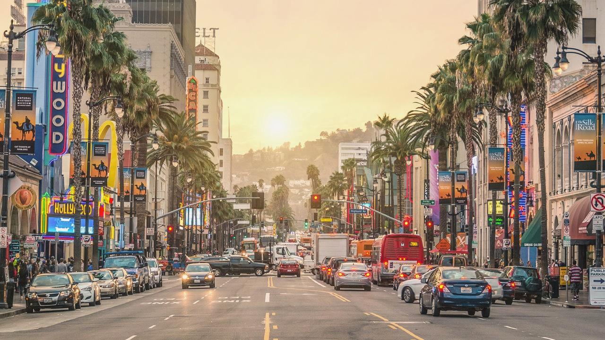
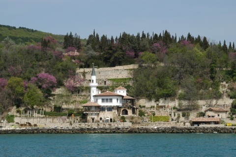

Los Angeles, SUA

Incepem sectiunea de travel in forta! Da, Los Angeles este un oras cum nu am mai vazut. Este greu de comparat cu ce sunt familiara. Ce am vizitat? Observatorul Griffith ( preferatul meu din toata excursia ), Hollywood Boulevard, Los Angeles Downtown, Bilboa Island, Disneyland Downtown. Daca ar fi sa spun cateva cuvinte despre fiecare ar fi:
- Observatorul Griffith este construit fix pe meridianul cu acelasi nume. Functioneaza la fel de bine ca un muzeu astronomic cat si ca un planetariu. Ceea ce am putut sa vad in planetariu imi intrece orice imaginatie, a fost o experienta ce intrece cuvintele. M-as intoarce oricand doar-doar sa mai vad odata..
- Hollywood Boulevard este exact ce ma asteptam! Alei intortochiate umbrite de palmieri unde cauti steaua artistului tau preferat pentru o poza perfecta!
- Los Angeles Downtown, sau mai exact zona zgarie-norilor. O zona gri si rece, dar impunatoare. Ca tot eram acolo, am vizitat si China Town, unde mi-au atras atentia trecerile de pieton in forma de dragon si bubble-tea, un suc cu "bilute" aromate specific din cate am inteles
- Bilboa Island este o insula linistita, curata, unde dai peste case de vacanta care mai de care mai scumpe. Imi amintesc ca am vazut casa lui Nicholas Cage, sau cel putin.. asa ne-a spus ghidul
- Disneyland Downtown nu este exact Disneyland-ul la care te gandesti. Acesta nu era parcul de distractii, ci zona cu magazine de suveniruri si restaurente tematice si cate si mai cate!
Balchik, Bulgaria

In alte cuvinte, cea mai relaxanta vacanta pe care am avut-o. Litoralul bulgaresc, din unica experienta ce-i drept, ofera conditii foarte bune la un pret mai mult decat accesibil.
De vizitat poti vizita castelul reginei Maria cu gradinile botanice din imprejurul sau. Gradinile sunt imense, deci ai grija sa iti rezervi o zi intreaga pentru a le vedea. Sfat: ia-ti o incaltaminte comoda, vei avea de umblat si de urcat scari.
Altfel, vacanta in Balchik mi-am petrecut-o in mare parte plimbandu-ma pe faleza si balacindu-ma in piscina hotelului. Oricat de "plictisitor" poate parea, vacanta asta era exact ce am avut nevoie intr-o perioada destul de stresanta. Un "tratament" universal as zice eu.
Try it! ;)
Berlin, Germany

Si ce vacanta a fost si asta!
Am stat doar 4 zile ce-i drept, dar as avea de povestit cat pentru 4 review-uri ( nici chiar asa, sa fiu sincera). M-am intors putin dezamagita ca timpul nu mi-a ajuns sa vad chiar tot ce mi-am propus. Berlinul e o destinatie destul de accesibila, iar curse low-cost se gasesc cu duiumul aici. Sa va spun ce am vizitat:
- muzeul DDR este un muzeu interactiv unde iti garantez ca nu ai cum sa te plictisesti. Poti vedea era sovietica exact asa cum era reflectata in Berlinul de Est. Poti atinge exponate, poti vizita apartamente mobilate prin prisma erei pre '89 si poti chiar sa conduci un trabant intr-o simulare. Nu va mai zic, va las pe voi sa vedeti!
- Berlinul are o asa-zisa "Museum Island" unde cu greu te poti hotari ce sa alegi pentru a vizita. Din aceasta serie, am ales muzeul Pergamon ( unde poarta Istar a Babilionului a fost reconstruita - putin spus impresionanta ) si Muzeul National de Istorie ( din graba pentru a prinde avionul trebuie sa recunosc ca ceea ce am vazut a fost pe repede inainte. Un muzeu mult mai vast decat imi imaginam)
- un simbol al Berlinului este si Domul, ce pe interior te poate lasa masca. Ai grija sa urci scarile pana pe acoperis, vei avea o priveliste pur si simplu impresionanta
- zidul Berlinului si poarta Brandenburg bineinteles!
- o sa mentionez si un local care rar mai vezi: se numeste "Yamm", este situat in Berlinul de Est, si este amenajat pe o suprafata destul de mare pe marginea raului Spree. Eu as numi acest loc o fasie de Caraibe - mancare traditionala, plaja aritficiala, atmosfera tropicala si toate cele! Sunt curioasa cand va fi preluat conceptul si se va amenaja asa un loc si pe malul Dambovitei - cum ar fi?
Voi incheia acest review cu niste sfaturi: daca esti student, fa-ti un card ISIC inainte sa calatoresti prin Europa. Te va ajuta enorm sa beneficiezi de reduceri de student. Totodata, recomand serviciul AirBnb, aici a fost prima oara cand l-am folosit si a meritat din plin! Unde mai pui ca am si economisit foarte mult pe cazare?
Fiti pe faza, caci va urma
Bologna, Italia